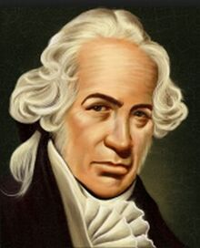

Daniel Gabriel Fahrenheit
Date biografice
A fost un fizician și inventator. Fahrenheit s-a născut la Danzig (acum Gdańsk , Polonia), dar a trăit cea mai mare parte a vieții sale în Republica Olandeză(1701–1736) .
Un pionier al termometriei, a inventat termometrul cu mercur din sticlă și scala Fahrenheit . Cu alte cuvinte, invențiile lui Fahrenheit au creat prima revoluție din istoria termometriei (ramura fizicii în legătură cu metodele de măsurare a temperaturii ). De la începutul anilor 1710 și până la începuturile erei electronice, termometrele cu mercur în sticlă au fost printre cele mai fiabile și precise termometre inventate vreodată.
Familia
Părinții săi erau comercianți germani . Străbunicul lui Fahrenheit locuise în Rostock , iar cercetările sugerează că familia Fahrenheit își are originea în Hildesheim .Bunicul lui Daniel s-a mutat din Kneiphof în Königsberg (actualul Kaliningrad) la Danzig și a devenit comerciant în 1650. Fiul său, Daniel Fahrenheit (tatăl lui Daniel Gabriel), s-a căsătorit cu Concordia Schumann, fiica unei cunoscute familii de afaceri din Danzig. Daniel a fost cel mai mare dintre cei cinci copii ai familiei (doi fii, trei fiice) care au supraviețuit copilăriei. Sora sa, Virginia Elisabeth Fahrenheit, s-a căsătorit cu Benjamin Krüger și a fost mama lui Benjamin Ephraim Krüger, cleric și dramaturg.
Activitatea
Daniel Gabriel a început să studieze comerțul la Amsterdam după ce părinții lui au murit la 14 august 1701 din consumul de ciuperci otrăvitoare . Totuși, interesul lui Fahrenheit pentru științele naturale l-a determinat să înceapă studii și experimente în acel domeniu. În 1717, Fahrenheit s-a stabilit la Haga realizând barometre și termometre . Începând cu anul 1718, a ținut prelegeri în chimie la Amsterdam. A vizitat Anglia în 1724 și a fost ales în același an Fellow of the Royal Society . Din august 1736 Fahrenheit a rămas în casa lui Johannes Frisleven, în piața Plein din Haga, în legătură cu o cerere de brevet în statele Olandei și Frisiei de Vest . La începutul lunii septembrie s-a îmbolnăvit, iar la 7 starea de sănătate i s-a deteriorat într-o asemenea măsură încât și-a scris testamentul. Pe 11, notarul a venit din nou pentru a face unele schimbări. Cinci zile după aceea, Fahrenheit a murit la cincizeci de ani. Patru zile mai târziu, el a primit o înmormântare de clasa a patra, ceea ce însemna că era înstărit , la Kloosterkerk din Haga. (Biserica Cloisterului sau Mănăstirii)
Scara Fahrenheit
Scara Fahrenheit a fost propusă în 1724 de către fizicianul Daniel Gabriel Fahrenheit și numită după acesta. Astăzi scara Fahrenheit a fost înlocuită de scara Celsius în cele mai multe țări care au adoptat S.I..
Se crede că Fahrenheit a luat ca punct 0 al scalei lui, temperatura la care un amestec masic echivalent de gheață și sare se topește și 100 (96 de fapt) temperatura internă a corpului uman. În mod foarte practic, acesta a divizat succesiv intervalul obținut la numere pare (întâi la 12 și apoi la 8), fapt care face facilă realizarea practică a scărilor gradate pentru termometre, tot așa cum facil e și lucrul cu țoli (sau alte câteva unități de măsura nonzecimale), la care până și cea mai mică diviziune o poți obține prin simple „îndoiri” (împărțiri în două) repetate.
Formula de conversie a unei temperaturi date din grade Celsius în grade Fahrenheit (și invers) derivă din aplicarea unei reguli de trei (ținând cont, firește, de decalaj) al punctelor de echivalență binecunoscute, anume 32°F = 0°C și 212°F = 100°C.
Termometrul
Când Fahrenheit a început să producă termometre proprii, le-a absolvit după ce credea că sunt metodele lui Roemer. Punctul fix superior (etichetat 22–1 / 2 °) a fost determinat prin plasarea becului termometrului în gură sau sub axila unui bărbat sănătos. Punctul fix inferior (marcat cu 7–1 / 2 °) a fost determinat de un amestec de gheață și apă. În plus, Fahrenheit a împărțit fiecare grad în patru părți, astfel încât punctul superior a devenit 90 ° și cel inferior 30 °. Mai târziu (în 1717) a mutat punctul superior la 96 ° și cel inferior la 32 ° pentru a elimina „fracțiunile incomode și incomode”.
Într-un articol despre punctele de fierbere ale diferitelor lichide, Fahrenheit a raportat că temperatura de fierbere a apei a fost de 212 ° pe scala sa termometrică. Această cifră a fost de fapt cu câteva grade mai mare decât ar fi trebuit. După moartea lui Fahrenheit, a devenit o practică standard pentru absolvirea termometrelor Fahrenheit cu punctul de fierbere al apei (setat la 212 °) ca punct fix superior. Drept urmare, temperatura corpului normal a devenit 98,6 ° în loc de Fahrenheit 96 °. Această variantă a scării Fahrenheit a devenit standard în întreaga Olanda și Marea Britanie. Astăzi este folosit în scopuri meteorologice în majoritatea țărilor de limbă engleză.
Fahrenheit știa că temperatura de fierbere a apei variază cu presiunea atmosferică și, pe acest principiu, a construit un termometru hypsometric care a permis unuia să determine presiunea atmosferică direct dintr-o citire a punctului de fierbere a apei. De asemenea, el a inventat un hidrometru care a devenit un model pentru evoluțiile ulterioare.

Termometru cu unități Fahrenheit pe scara exterioară și unități Celsius pe scara interioară
